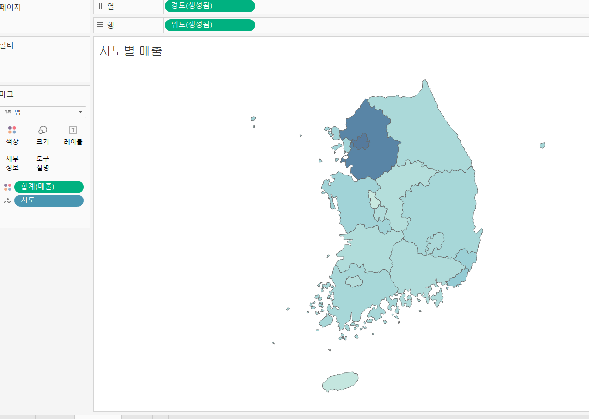

00. 대시보드 만들기
대시보드 만들기
연간매출
- 연간매출 워크시트 생성
- 주문일자와 매출을 이용하여 하이라이트 테이블 생성
월간 매출
- 월간매출 워크시트 생성 (2018 ~ 2021에 월간 매출 합을 계산)
시도별 매출
- 시도별 매출을 지도형태로 표현
- 시도 변수를 이용하여 위도와 경도 데이터 산출
- 그런 다음 새로운 워크시트를 생성해 시도를 더블클릭
- 그 다음 마크를 맵으로 변경
- 백그라운드 레이어 선택후 투명도를 100으로 설정
- 매출을 색상 마크에 드래그

맵차트에 파이차트 오버레이
- 열에 경도를 ctrl + 마우스 왼쪽으로 드래그
- 새롭게 산출된 경도(생성됨 (2))에서 합계(매출을) 마크에서 제외하고 맵을 파이차트로 변경
- 그 후, 고객 세그먼트를 색상, 매출을 크기와 각도로 넣고 효과있는 색상 테두리를 흰색으로 지정
- 이중축 사용
대시보드 생성
- 매출 대시보드 생성 후 연간 매출을 드래그
- 그다음 ctrl + 마우스 왼쪽으로 월간 매출을 드래그하여 아래, 시도별 매출을 월간 매출 오른쪽에 드래그
- 생성된 대시보드의 범례를 보니 고객세그먼트를 제외하고 나머지 범례는 필요가 없는것 같다.
- 고객 세그먼트를 제외한 범례들을 제거하고, 고객 세그먼트 범례의 세모박스를 클릭 후 부통을 체크해 적절한 공간에 배치하자.
- 또한, 연간 매출은 쓸데없이 너무 큰 비율을 차지한다. 마우스로 적당히 드래그하여 변경해준다.
연간매출 클릭시 월간매출과 시도 매출에 변화옵션추가
- 상단 메뉴바에서 아래와 같이 선택
- 동작 추가 \(\to\) 필터 선택
- 동작 세부 옵션 추가
- 월간 매출 클릭에 대한 동작 옵션도 위를 참고하여 작성 (2018 기준 변환 결과)
- 생성한 대시보드 공유
- 파일 \(\to\) 태블로 퍼블릭에 다른 이름으로 저장 클릭 후 대시보드 이름 입력